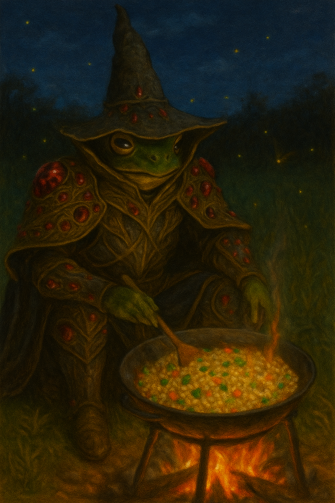

Fried Rice Recipe

Description
This is a recipe to a delicious fried rice recipe. This is the hardest recipe on this website but I know you can do it! Anything task can be accomplished when done in small easy tasks!
Ingredients
Main Ingredients
- 14 oz uncooked jamine rice
- 14 oz water
- 1 oz green onion
- 2 ox carrot
- 4 oz frozen corn and peas
- 4 large eggs
- 0.50 teaspoon salt
- 0.30 cup water
- 2 tablespoon oil
Rice Seasoning Ingredients
- 1 tablespoon light soy sauce
- 1 teaspoon dark soy sauce
- 0,5 teaspoon salt
- 0.50 teaspoon sugar
- 1 teaspoon chicken bouillon powder
- 1 tablespoon oil
Instructions
- Wash the 14 oz of rice 4 times, using fresh water each rinse. Drain the rice on the final rinse, add the rice to a rice cooker and cook is as per your rice cooker's instructions
- Cut the green parts of the green onions and dice into small pieces, You can use the white parts in another dish.
- Slice the carrot in half and then into strips. Hold the strips together and dice into small pieces. Combine the green onions and carrots with the frozen corn and peas in a bowl
- Crack the eggs into a bowl. Season with salt and set aside
- Once the rice is done cooking, leave it covered to steam for 2 minutes. Meanwhile, add the water to the bowl of vegetables and microwave for 2 mintues. Drain out the excess water and set aside
- Fluff up the rice using chopsticks or a fork for a mintue or 2
- Heat up your pan (or wok if you have one) on high and beat the eggs. Lower the heat to low and add oil, spreading it all over surface
- Add eggs and stir gently, cooking them for about 20-30 seconds. Add the cooked rice on top of the eggs, flip and stir fry constantly, breaking apart the clumps of rice and eggs with a spatula for about 2 mintues
- Using the flat side of a the spatula, press down on the rice and spread it over the wok to gently loosen any clumps
- Add mixed veggies, increase the heat to high, flip and stir fry for another 2-3 mintues.
- Turn down the heat to low. In a small bowl, combine the light soy sauce, dark soy sauce, salt, sugar, and chicken bouillon powder and pour over rice
- Increase the heat and stir fry everything for another 2-3 mintues
- Add oil and diced green onions, stir fry for another minute to mix everything then turn off the heat
- Taste and add more seasoning if needed
- Enjoy. (Image below for reference)
Go back home